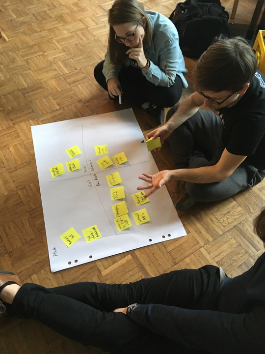
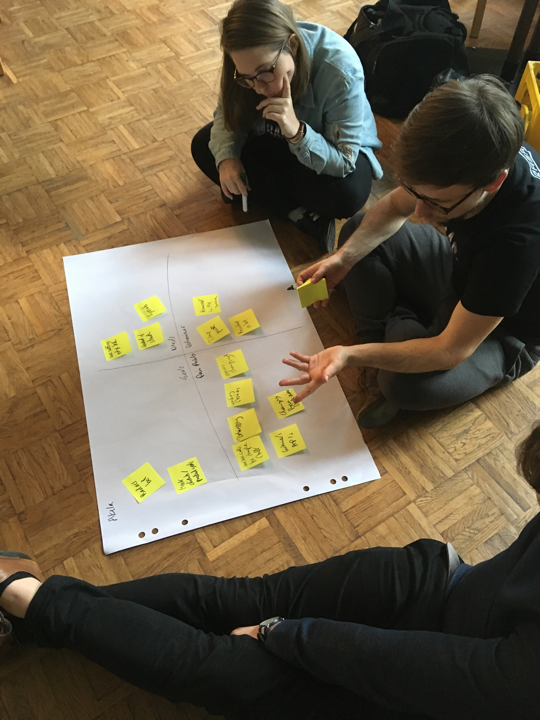
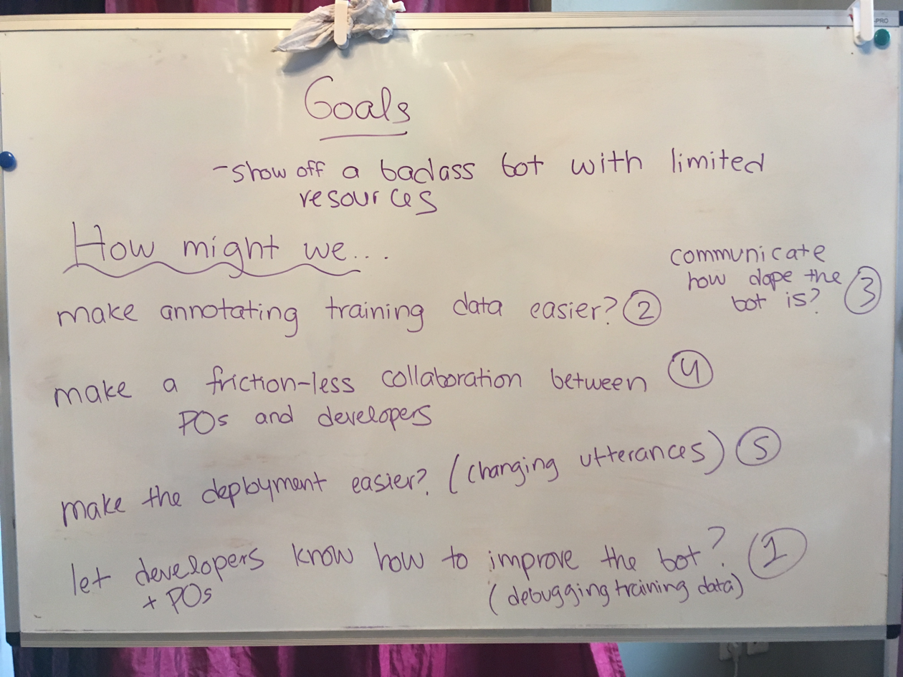
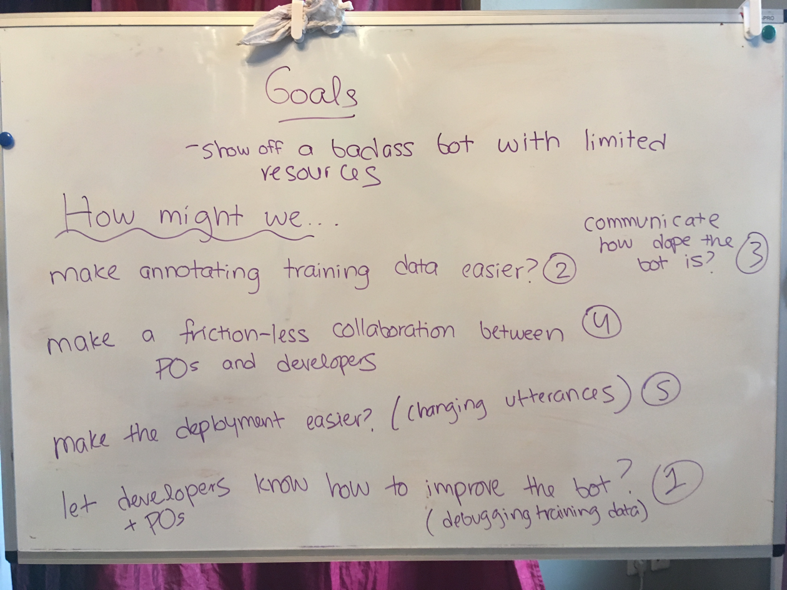
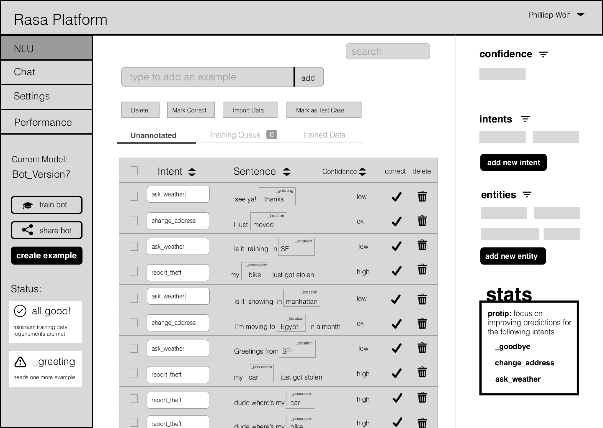
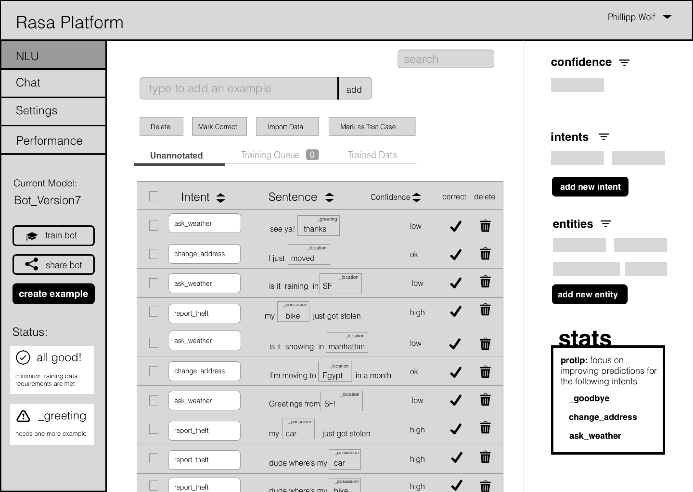
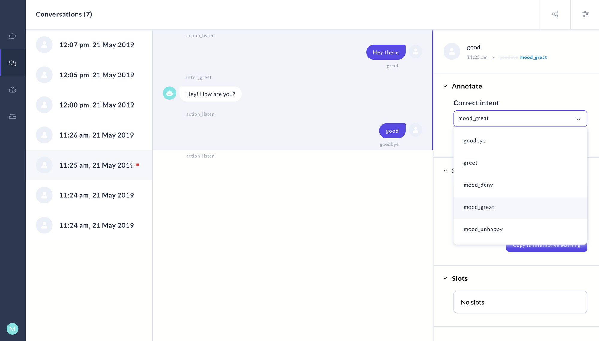
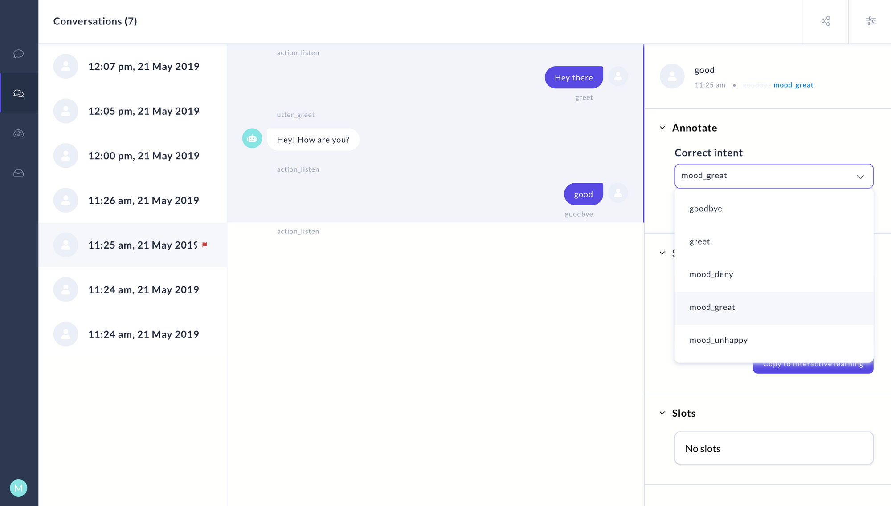

UX Engineer
Rasa X aims to empower non-engineers to train chatbots by correcting their mistakes and reviewing their accuracy. As a solo “ux minded” front-end engineer, I built a react web app to do this. I eventually left the company to pursue a role that was 100% UX design so I could focus on my craft of making high fidelity designs and understanding end users.

Workshops
I flew to Berlin and led design workshops with engineers, product managers, and end users to gain a familiarity of who we were building for. Another key outcome of these workshops was having people of different backgrounds and roles talk to one another and gain understanding for how they view this new and green field of machine learning, chatbots, and AI.
 

 



Identifying Pain Points
Everyone was excited and had a lot of feelings and ideas to share during the workshop, so much so that we ran out of time. We did a follow up where we identitied the current user journey of making a chatbot, from the perspective of an engineer as well as a product manager.

Reccomended User Journey
I then converted these painpoints into opportunites of where the web application Rasa X could fill the gaps. I presented my reccomendations to key stakeholders and included engineers to understand feasibility of the new approach.

Wireframes
Once we decided on a user journey and process flow, it was rounds and round of low fidelity wireframing. Design reviews were conducted with head of engineering, business, and end users.
 

Screenshots of the App
Due to my innumerable design and development responsibilities and pressure to meet tight deadlines, I did not create any hi-fidelity mockups at Rasa. I did the discovery phase of understanding the user, low fidelity wireframing, and then went straight to coding. Here are some screenshots of the final build.
 

Impact
My work was pivotal for Rasa in making the switch from a professional services company to a product company. The product proved to cut down chatbot training time and increase collobaration between product managers and engineers. Since the first version of the application, Rasa now has enterprise subscriptions for the product and customers from indsutry verticals like insurances, banking, telecom and healthcare.